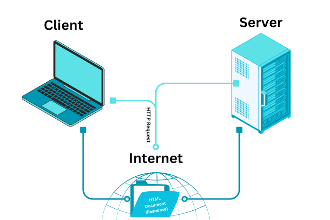

How I Built?
เริ่มจากการหาเรฟเฟอร์เรนส์โครงสร้าง HTML โดยSemantic กระบวนการมาจากการมองโครงสร้างให้เป็นboxเพื่อให้เห็นภาพง่ายขึ้นก่อนเขียน จากนั้นแต่งเพิ่มเติมเช่น เงา และหาตัวอย่างการใช้ด้วย W3schools จัดวางคอลัมป์จากคลิปในยูทูป

เริ่มจากการหาเรฟเฟอร์เรนส์โครงสร้าง HTML โดยSemantic กระบวนการมาจากการมองโครงสร้างให้เป็นboxเพื่อให้เห็นภาพง่ายขึ้นก่อนเขียน จากนั้นแต่งเพิ่มเติมเช่น เงา และหาตัวอย่างการใช้ด้วย W3schools จัดวางคอลัมป์จากคลิปในยูทูป
พบปัญหาหลายจุดจากตัวเองที่วางโครงสร้างไม่ดี กำหนดชื่อคลาสซํ้า หรือลืมการใช้ CSS Property บางส่วน ทำให้ต้องแก้ไขตรวจสอบทีละจุดจาการครอบด้วยกรอบเพื่อให้ทราบเเต่ละเนื้อหา จากการทำ A1 ทำให้เข้าพื้นฐานกำหนดแตละ section มากขึ้น หากได้พัฒนาต่อ อยากทำให้สวยขึ้นโครงสร้างเป็นระเบียบขึ้นมากกว่านี้